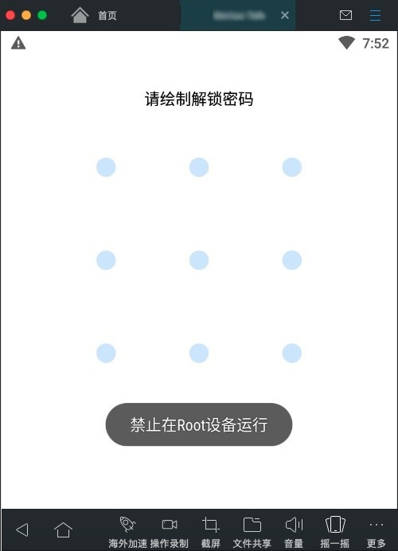
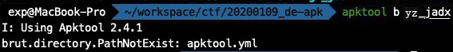

练习
| 条项 | 说明 |
|---|---|
| APP | YZ.apk |
| 目标 A | 绕过 root限制 |
| 目标 B | 拿到 abService 签名 key 并通过中间人改至少改一个包（通过签名验证） |
参考资料
| 内容 | 说明 |
|---|---|
| Android Studio 用户指南 | 低：IDE 说明文档，暂时还用不到 |
| Mac 上可测试开发的安卓模拟器 | 低：MAC上搭建安卓模拟环境 |
| 在 VirtualBox 中安装 Android 系统 | 低：MAC上安装各种安卓模拟器失败后的折中方法 |
| Android 反编译及调试利器 | 低：一些常用工具 |
| 微信 Android SDK 反编译还原源码 进行修改重新编译 | 低：非入门级的思路指导 |
| 移动安全: 通过逆向 APK 绕过 Android root 检测 | 高：apk为什么要限制root，检测root的原理是什么 |
| Android 反编译后重新打包 | 高：入门级思路指导 |
| Android 逆向基础：Smali 语法 | 高：逆向后如何修改代码（非源码的中间代码） |
| Smali 基础知识 | 高：逆向后如何修改代码（非源码的中间代码） |
| 安卓 apk 反编译、修改、重新打包、签名全过程 | 高：反编译后如何重新封包（使用JDK） |
| Android 反编译 Apk，修改资源，重新打包，签名发布 | 中：反编译后如何重新封包（使用工具） |
| Inspeckage 安装教程 | 低：看看就好，可以不用到 Inspeckage |
| inspeckage xposed 插件分析 app 及微信 Log | 低：Inspeckage 案例参考 |
| Android App 逆向工程初探 | 高：案例参考，逆向后如何找到 HTTP 签名算法 |
工具
| 工具 | 说明 |
|---|---|
| jadx | 用于 apk 反编译（为可读的 java 源码） |
| apktool | 用于 apk 反编译（为不易读的 Smali 中间码） 用于 Smali 重打包为 apk |
| JDK | keytool：用于生成自签名证书 jarsigner：用于给 apk 自签名 |
| 网易 MuMu | 安卓模拟器（蓝叠不支持MAC，夜神又安装失败，最后没办法选了这个） |
| Xposed | 用来胁持系统 API 的 hook 框架 （需要 root 系统才能装） |
| Inspeckage | Xposed 的一个模块，用于动态分析 app（事实上用不到） |
| TrustMeAlready | Xposed 的一个模块，用于绕过 SSL Pinning 防抓包（如果 APP 没有防抓包则用不到） 本来应该装 JustTrustMe 的，但是搜不到，用了这个替代 |
| Burp Suite | 用于抓包和中间人攻击 |
【目标 A】 绕过 root 限制
A.1. 解题思路
通过文章《移动安全: 通过逆向 APK 绕过 Android root 检测》可以知道，apk 的 root 检测都是通过（java）代码实现的，因此要绕过 root 的思路也很直白了：
- 反编译 apk 安装包
- 找到 root 检测代码
- 修改检测逻辑，使其不生效（删除或固化其检测结果均可，只要没有多处埋点，一般只有程序入口一处）
- 重新打包为 apk 安装包
- apk 自签名（apk 有防篡改机制，所有文件都会生成 hash 校验码，签名目的是重新生成这些校验码）
- 在启用 root 的模拟器上验证
A.2. 解题过程
A.2.1. 找到 root 检测入口
首先需要 root 检测入口的点在哪。
使用模拟器安装 YZ.apk 并运行，会提示【禁止在 Root 设备运行】，然后会直接关掉 APP 进程，而明显这就是我们需要绕过的逻辑。

鉴于已经有明显的检测提示【禁止在Root设备运行】，那么使用 jadx 反编译 YZ.apk，然后直接搜索源码哪里出现这个字符串即可，检测逻辑必定在附近。
jadx 反编译得到的是 java 源码
为了方便后续操作，jadx → 另存为 Gradle 项目（这里导出保存目录为 yz_jadx）
Gradle 的定位类似于 Maven
暂时不需要用到 IDE， 直接使用 ST3 打开导出的 Gradle 项目，全局搜索关键字【禁止在】，在文件 src/main/res/values-zh/strings.xml 找到唯一一条定义：【禁止在Root设备运行】
从目录编排上不难判断 src/main/res/values-xx 就是用于定义某国 xx 语言的提示字符串的 xml 配置文件，很明显这是一个多国语言的 APP。
而且从 xml 格式和内容来看，很明显定义了两个变量：
warn_root_disabled= “禁止在Root设备运行”warn_emulator_disabled= “禁止在模拟器上运行”
与这两个变量相关的逻辑极可能都是我们需要绕过的。

再次全局搜索关键字【warn_root_disabled】，在文件 src/main/java/com/xxx/oooooooooo/ui/main/MainActivity.java 找到唯一一次代码引用：
查看 MainActivity.java 类的源码，发现明显被混淆过了。
不过不难判断方法 private void e() 内实现了【root 检测】和【模拟器检测】。因为前面搜索到的两个目标变量都在这里出现了：
warn_root_disabled= “禁止在Root设备运行”warn_emulator_disabled= “禁止在模拟器上运行”
A.2.2. 修改 root 检测逻辑（java源码）
其实从源码不难解读到：
e.b()是用于检测模拟器的e.a()是用于检测 root 的k.a()应该是输出提示消息到 UI 的
而最开始在模拟器上运行 YZ.apk 所诱发的提示【禁止在Root设备运行】，明显就是 k.a((int) R.string.warn_root_disabled); 这行代码执行结果。
那么要达到无法检测 root 的目标，只需要让 k.a() 所在的条件分支代码无法执行即可，例如这样修改代码：
但是修改 java 源码后，使用 apktool b yz_jadx 命令重新编译打包会报错：
【brut.directory.PathNotExist: apktool.yml】

从 Github issue 找到原因，这是因为 yz_jadx 是通过 jadx 逆向得到的项目，亦即 yz_jadx 并不是 apktool d 命令逆向生成的，导致 apktool 找不到 apktool.yml 文件，从而无法重新打包。
A.2.3. 修改 root 检测逻辑（Smali中间码）
于是这里变更逆向的方法：使用 apktool d YZ.apk 命令反编译 YZ.apk ，得到目录名为 YZ 项目。
在目录下果然可以找到 apktool.yml 文件，在里面还记录了每个类的 JDK 编译版本为 8 （即 1.8）。
需要注意的是，使用 apktool 逆向出来的代码不是 java，而是名为 smali 的中间码。
根据前面所找到的 java 文件 src/main/java/com/xxx/oooooooooo/ui/main/MainActivity.java，可以对应找到的 smali 文件 smali/com/xxx/oooooooooo/ui/main/MainActivity.smali。
稍微学习一下 smali 语法，不难找到 smali 的 .method private e()V 就是 java 的 private void e()。
两种代码的对应关系整理如下：
| 序号 | smali 中间码 | java 源码 | 分析说明 |
|---|---|---|---|
| 01 | .method private e()V… .end method |
private void e() {… } |
定义方法 |
| 02 | |||
| 03 | |||
| 04 | |||
| 05 | |||
| 06 | |||
| 07 | |||
| 08 | |||
| 09 | |||
| 10 | |||
| 11 | |||
| 12 | |||
| 13 | |||
| 14 | |||
| 15 | |||
| 16 | |||
| 17 | |||
| 18 | |||
| 19 | |||
| 20 |